Introduction to Linear Regression
@raphaelmcobe
### Regression: Definition #### Regression: What is it? - Attempts to <span class="highlight">predict</span> numerical values directly <span class="highlight">from attributes</span> of a new example. #### Examples - <span class="highlight">Predicting</span> tomorrow's temperature <span class="highlight">from</span> atmospheric conditions. - <span class="highlight">Estimating</span> the price of a house <span class="highlight">from</span> its size. --- ### More Formally...... #### Problem definition - Approximating a quantitative variable $Y \in \mathbb{R}$ (<span class="highlight">response</span>) - From predictor variables $X_1, \dots, X_n \in \mathbb{R}$ - When $n = 1$: Simple or univariate regression - When $n>1$: Multivariate regression - <span class="highlight">Objective:</span> Find the function $h$ (<span class="highlight">hypothesis</span>): $$Y \approx h(X_1, \dots, X_n)$$ --- #### Strategy: - Using a set of examples (<span class="highlight">dataset</span>) where the correct response is known to "learn" a model. --- ## Learning the Model #### Ideally, the algorithm to learn the model should: - Be able to reconstruct the modeled phenomenon with the highest possible precision (except for a quantifiable error) - Require as little data as possible for learning - Represent the model in the simplest possible way (Occam's Razor) - There is no "correct answer" for all problems - There are many types of models (linear models, trees, neural networks, etc.) --- Sales volume as a function of advertising budget in different media 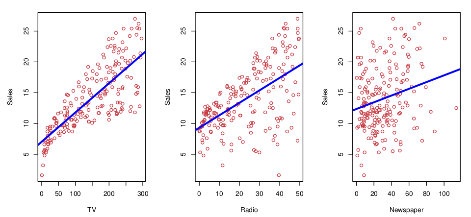 --- Income as a function of schooling 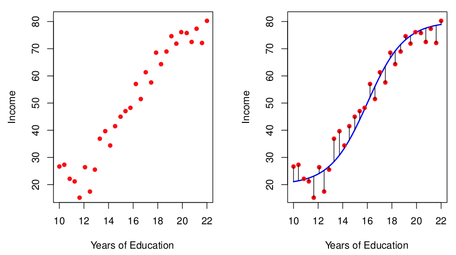 --- #### The training set can be visualized as a table | Size in ft² | Price ($) in 1000's | |-------------|---------------------| | 2104 | 460 | | 1416 | 232 | | 1534 | 315 | | 852 | 178 | | ... | ... | --- 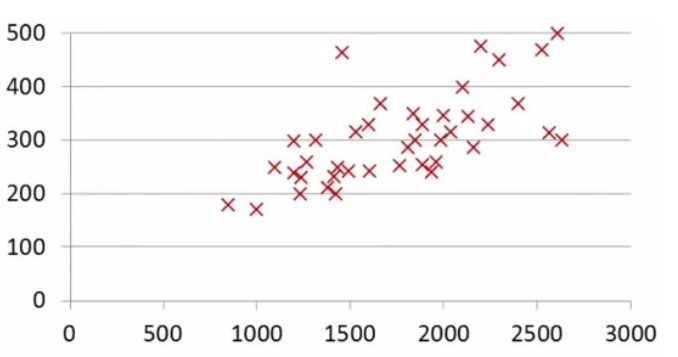 --- ## Univariate Linear Regression --- ### Linear Regression #### Case: Only one feature $$Y = \theta_0 + \theta_1 X $$ $h$ is represented as a straight line: $$h(\theta) = \theta_0 + \theta_1 X$$ --- #### Equation of the Line: $$y = mx + n$$ <img src="img/equacao_reta.png"/> - $m$ = angular coefficient (indicates slope of the line) - $n$ = linear coefficient (<em>intercept</em>) --- $$ y = mx + n$$ $$h(\theta; X) = \theta_0 + \theta_1 X^1$$ <em>Objective: Find the best line ($\theta$) according to the training data</em> --- ### And what would be the <span class="highlight">best</span> line? - Find the line $h$ that passes as close as possible to all points #### Residual - Difference between the actual $Y$ value and the estimate $\widehat{Y} = h(\Theta;X)$ $$\epsilon_i = y_i - \widehat{y}_i$$ --- #### Finding the weights Manually <a href="https://jalammar.github.io/visual-interactive-guide-basics-neural-networks/\#train_your_dragon"> <img src="img/manual_trainning.png"> </a> --- 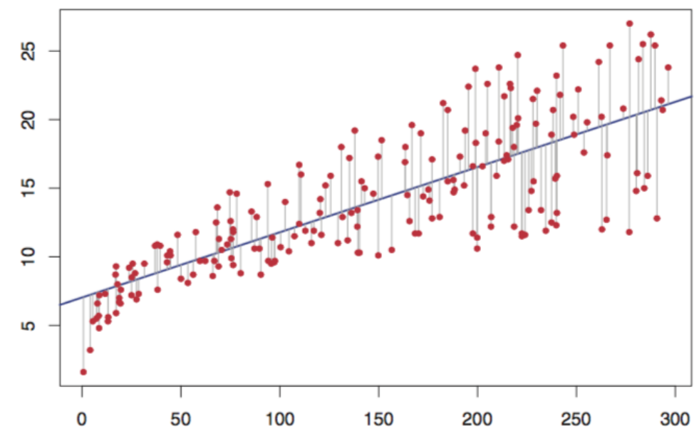 --- - One way to calculate $\theta_0$ and $\theta_1$ is to base it on the <span class="highlight">R</span>esidual <span class="highlight">S</span>um of <span class="highlight">S</span>quares (RSS) $$J(\theta) = \frac{1}{2n}\sum_{i=1}^{n} \epsilon_i^2$$ --- ### Cost Function Variation #### Examine $\epsilon$ as a function of $\theta_0$ and $\theta_1$ 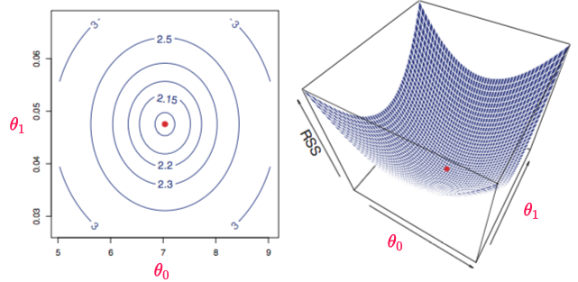 --- ### Finding values for $\theta_0$ and $\theta_1$ #### Gradient Calculation - The gradient of a vector is a generalization of the derivative and is represented by the vector operator $\nabla$. This operation is used to minimize our cost function (<span class="highlight">RSS</span>): - Ordinary Least Squares Method --- ### Finding values for $\theta_0$ and $\theta_1$ #### The problem with the analytical solution - The analytical solution in its vector representation has the form: $$ \Theta = (X^T X)^{-1} X^T Y $$ - Disadvantages of using the analytical solution: - $X^T X$ is not always invertible; - The complexity of calculating the inverse is on the order of $O(n^3)$: - If the number of features is high, it can become <span class="highlight">computationally expensive</span>; - Very high memory consumption --- ### Finding values for $\theta_0$ and $\theta_1$ #### Inverse calculation - Imagine a dataset containing $10^5$ features and $10^6$ observations. In this case, $X^T X$ would have $10^5\times10^5$ floating points, which, at 8 bytes per number, would yield <span class="highlight">80 gigabytes</span>. The inverse calculation should then consume on the order of $O(n^3)$ (<span class="highlight">80 quilo yottabytes!!!</span>); --- ### Finding values for $\theta_0$ and $\theta_1$ #### Gradient Descent Technique - Iterative calculation of the $\Theta$ matrix with: $$\theta_0^{(t+1)} = \theta_0^{(t)} - \alpha \frac{\partial RSS}{\partial \theta_0}$$ $$\theta_1^{(t+1)} = \theta_1^{(t)} - \alpha \frac{\partial RSS}{\partial \theta_1}$$ - Where $\alpha$ is the Learning Rate, i.e., the size of the step towards the minimum cost value; --- 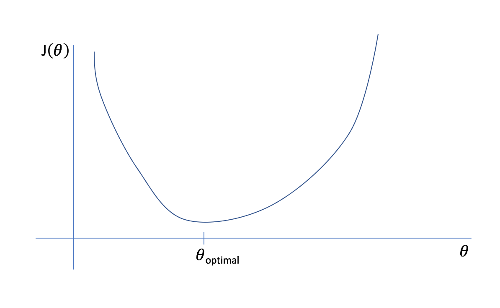 --- 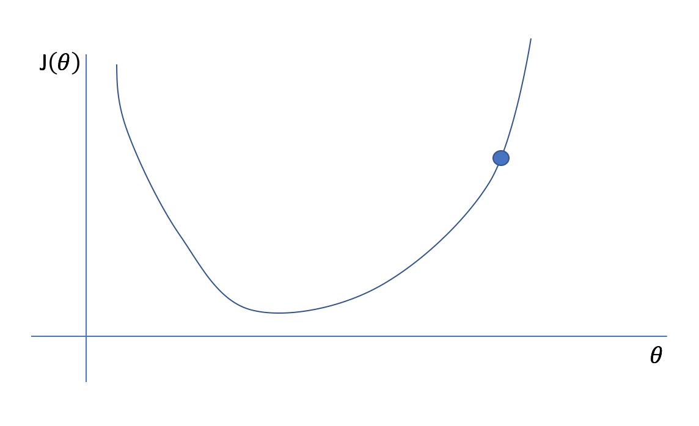 --- <img src="img/gradient_descent3.png"/> --- 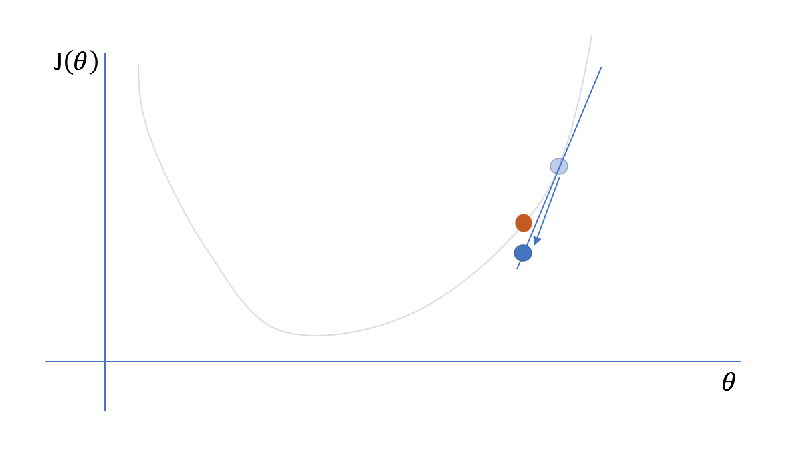 --- 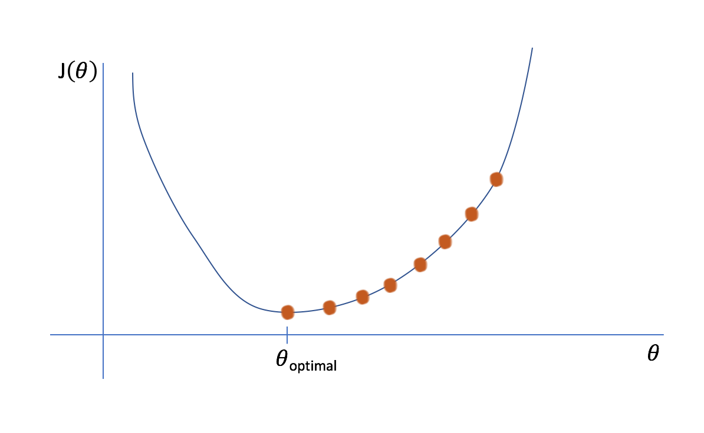 --- #### Visualizing Gradient Descent in Action <a href="https://jalammar.github.io/visual-interactive-guide-basics-neural-networks/\#automation"><img src="img/gradient_descent6.png"/></a> --- ### Performance Evaluation #### How to know if the result was good? 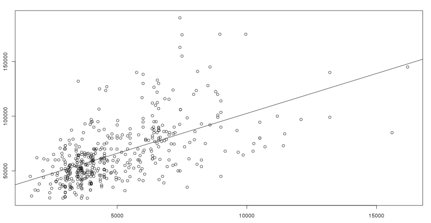 --- ### Regression Evaluation #### RSS itself can be used 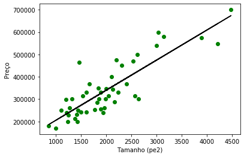 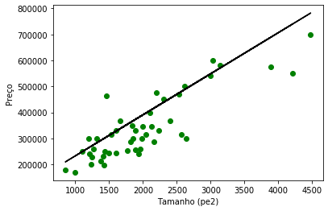 --- ### R$^2$ Statistic - Measures the proportion of $Y$'s variability that can be explained by $X$. $$\begin{split} TSS = \sum_{j}(y^j - \bar{y})^2 \; \;\; & \;\;\; RSS = \sum_{j}(y^j - \widehat{y})^2 \end{split}$$ $$R^2 = \frac{TSS - RSS}{TSS}$$ --- --- ### Hands-on Exercises #### Notebooks: --- ## Linear Regression ### Multivariate Regression --- - In most practical problems, using only one attribute <span class="highlight">is not enough</span> to estimate the response - In this case, Linear Regression must estimate a Hyperplane as model $h$. --- ### Linear Regression with Multiple Variables $$Y = h(\Theta;X) = \theta_0 + \theta_1 X_1 + \dots + \theta_{n} X_{n}$$ --- | Size in ft² | Number of rooms | Price ($) in 1000's | |-------------|------------------|----------------------| | 2104 | 3 | 460 | | 1416 | 3 | 232 | | 1534 | 3 | 315 | | 852 | 2 | 178 | | ... | | ... | --- - As in the univariate case, $\theta$ values must be chosen based on the training set - The least squares method also works for the multivariate case - Another possibility to perform learning is through the <span class="highlight">Gradient Descent</span> method --- ### Gradient Descent - Starting from the <span class="highlight">Mean Squared Error</span> cost function $$J(\theta) = \frac{1}{2m} \sum_{i=1}^{n} (y_i - h(\theta;\boldsymbol{x}_i))^2 $$ - Define parameters $\theta$ that minimize $J$ --- Gradient Descent Algorithm 1. Initialize $\theta$ randomly 1. Modify $\theta$ values (following the gradient), to reduce $J$ until a minimum value is reached. --- 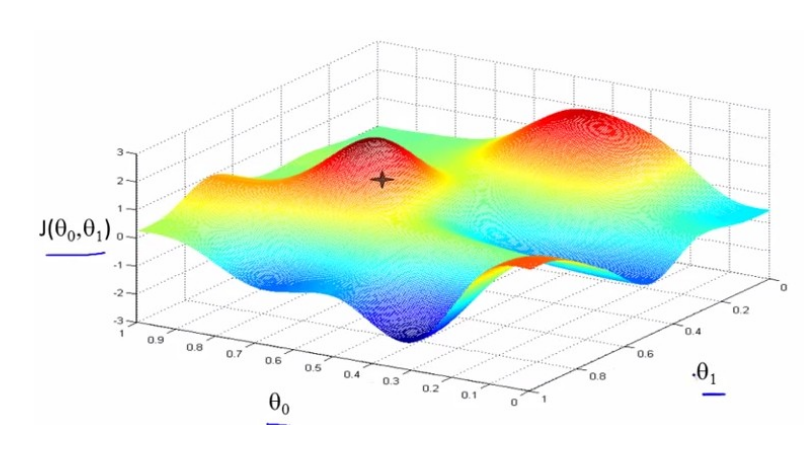 --- 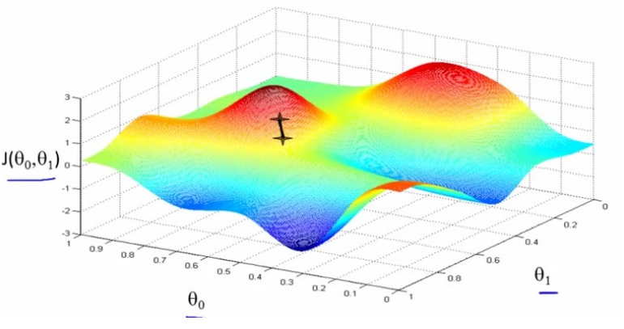 --- <img src="img/gradient_3d_3.png"/> --- <img src="img/gradient_3d_4.png"/> --- 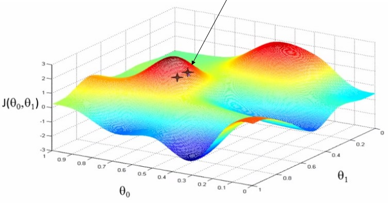 --- 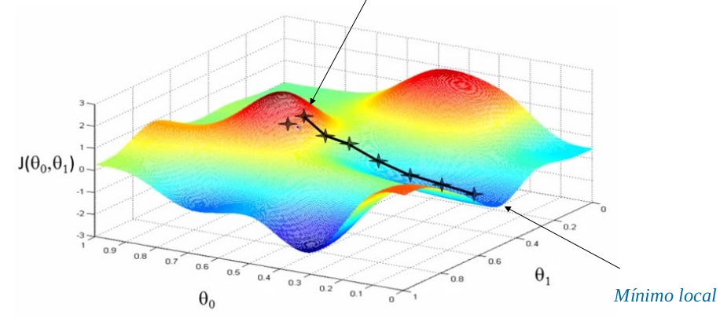 --- ### Applying Gradient Descent 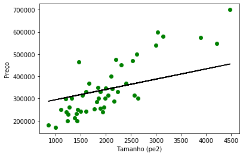 Repeating <span class="highlight">1</span> training iteration. $RSS = 4.2 \times 10^{12}$, $R^2 = -5.76$ --- <img src="img/reta_gradient_descent2.png"/> Repeating <span class="highlight">2</span> training iterations. $RSS = 2.9 \times 10^{11}$, $R^2 = -0.79$ --- 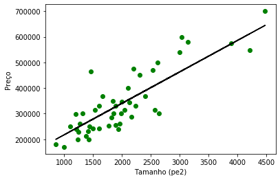 Repeating <span class="highlight">7</span> training iterations. $RSS = 1.9 \times 10^{11}$, $R^2 = 0.55$ --- ### Linear Regression #### Advantages - Efficient learning - Simple model to visualize and understand #### Disadvantages - Many real problems are not linear --- ## Other forms of Regression ### K-Nearest Neighbors Regression --- ### KNN Regression (<span class="highlight">K-Nearest Neighbors</span>) - $Y$ can be estimated based on the $k$ closest examples in the training set. $$h_{K}(\boldsymbol{x}) = \sum_{j \in \mathcal{N}_K} w_j(\boldsymbol{x},\boldsymbol{x}^j) y^j$$ - Where $K$ is the number of neighbors, $\mathcal{N}_K$ is the set of samples present in the $K$-neighborhood, and $w_j$ is the weight of $\boldsymbol{x}$ in relation to $\boldsymbol{x}^j$ --- - Assuming all samples have the same weight: $$h_{K}(\boldsymbol{x}) = \frac{1}{K} \sum_{j \in \mathcal{N}_K} y^j$$ - No training process is required --- 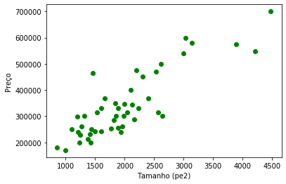 --- #### Imagine we want to predict the price of a house with size = $4200$ <img src="img/knn_exemplo1.png"/> --- #### If $K=3$, we must find the 3 examples closest to the desired value 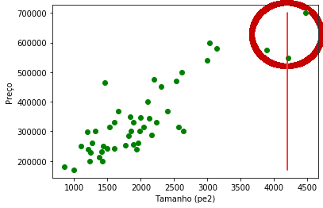 --- #### The predicted value is defined as the average of these values $$Y = \frac{1}{3} (699900 + 573900 + 549000) = 607600$$ --- 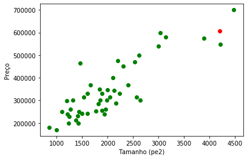 --- ### Required Parameters for KNN 1. $K \rightarrow$ number of neighbors 1. A distance metric to find the "nearest" neighbors 1. A way to define the weight for each example --- ### Examples of models learned with KNN 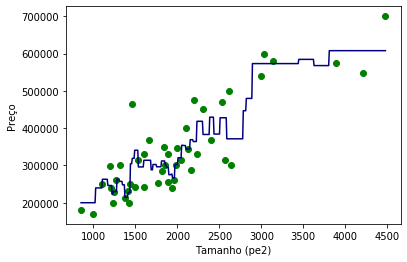 $K=3$ --- 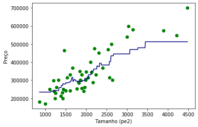 $K=10$ --- #### Advantages - The learned model does not need to be linear - No training phase - Few parameters to define #### Disadvantages - Very costly inference process - Sensitivity to noise and scale ## Introduction/Motivation <!-- .slide: data-background="#6d8ba7" --> -- ### A (few) word (s) on unstructure data - Structured or Semistructured data includes fields or markup that enable it to be <span class="highlight">easily parsed by a computer</span>; - Language is <span class="highlight">unstructured data</span> that has been <span class="highlight">produced by people</span> to be <span class="highlight">understood by other people</span>; - Retrieving information from unstructured data <span class="highlight">is essential</span>! - It is estimated that [80% of the world’s data is unstructured](https://www.ibm.com/blogs/watson/2016/05/biggest-data-challenges-might-not-even-know/). - Unstructured data <span class="fragment highlight-red">*is not random!*</span> - Linguistic properties that make it very understandable to other people <!-- .element: class="fragment" --> -- ### Language as Data - Text mining: - Process of deriving insights from (unstructured) text data; - Natural Language Processing (NLP): - Part of computer science and artificial intelligence which deals with human languages. - Sentiment Analysis: - Just a small variant of Text mining; Note: This is a simple note - Test - Test2 -- ### Understanding text is hard - Real-world data is often <span class="highlight-r">messy</span> and <span class="highlight-r">noisy</span>; - Several factors that makes this process hard: - Encoding scheme used (ASCII, UTF-8, UTF-16, Latin-1, etc.); <!-- .element: class="fragment" --> - hundreds of natural languages, each of which has different syntax rules; <!-- .element: class="fragment" --> - Words can be ambiguous (dependent on their context);<!-- .element: class="fragment" --> - case-sensitive, punctuation, numbers, hyperlinks, the use of emoticons and emojis <!-- .element: class="fragment" --> <span>😜</span><!-- .element: class="fragment" --> - synonyms, abbreviation, acronyms, and spelling errors;<!-- .element: class="fragment" --> - often need to understand which words in a sentence are nouns and which are verbs; <!-- .element: class="fragment" --> --- ## Processing Textual data <!-- .slide: data-background="#6d8ba7" --> -- ### How to process textual data? - “the numbers don’t lie” and not “the text doesn’t lie”; - Machine learning: - train statistical models on language as it changes; - building models of language on <span class="highlight"> context-specific corpora</span>; - Model that describes language and can make inferences based on that description - To take advantage of the predictability of text, we need to define a constrained, numeric decision space on which the model can compute; -- ### How to process textual data? - Break the text processing into steps: - <span class="fragment highlight-blue">Finding Parts of Text</span> - Finding Sentences - Finding People and Things - Detecting Parts of Speech - <span class="fragment highlight-blue">Classifying Text and Documents</span> - Extracting Relationships - Combined Approaches --- <!-- .slide: data-background="#6d8ba7" --> ## Finding Parts of Text Examples taken from [Real Python Regular Expressions Tutorial](https://realpython.com/regex-python/) -- ### Regular Expressions A (very) brief history - In 1951, mathematician Stephen Cole Kleene described the concept of a regular language, a language that is recognizable by a finite automaton; - In the mid-1960s, computer science pioneer Ken Thompson, one of the original designers of Unix, implemented pattern matching in the QED text editor; - Appeared in many programming languages, editors, and other tools as a means of determining whether a string matches a specified pattern; -- ### The Python `re` module - Regex functionality in Python resides in a module named `re`. The `re` module contains many useful functions and methods. Let's play a little bit with the `search()` function: - `re.search(<regex>, <string>)` ```python[1|2|3-4] >>> import re >>> text = "foo123foo" >>> re.search("123", text) <re.Match object; span=(3, 6), match='123'> ``` -- ### The Python `re` module - `span=(3, 6)` indicates the portion of `<string>` in which the match was found. This means the same thing as it would in slice notation: ```python[1|2] >>> text[3:6] '123' ``` -- ### Regular Expressions in Python - Any character or sequence of carachters is a valid regular expression; - The `search()` function returns the first sequence of characters that matches the RE; ```python[2-3|4-5] >>> text="abc123abc" >>> re.search("a", text) <re.Match object; span=(0, 1), match='a'> >>> re.search("abc", text) <re.Match object; span=(0, 3), match='abc'> ``` -- ### Regular Expressions in Python Metacharacters - Real power of regex matching in Python emerges when `<regex>` contains special characters called <span class="highlight">metacharacters</span>; - Unique meaning to the regex matching engine; - **Character class**: - Matches any single character that is in the class; - Defined using square brackets ([]); - Can be used to specify intervals ```python[1-2|3-4|5-6|7-8] >>> re.search('[0-9]', "abc123abc") <re.Match object; span=(3, 4), match='1'> >>> re.search('[2-9]', "abc123abc") <re.Match object; span=(4, 5), match='2'> >>> re.search('[0-9][0-9][0-9]', "abc123abc") <re.Match object; span=(3, 6), match='123'> >>> re.search('[2-9][0-9]', "abc123abc") <re.Match object; span=(4, 6), match='23'> ``` -- ### Regular Expressions in Python Metacharacters - character classes - Can have all the characters enumerated: ```python[1-2|3-4] >>> re.search('ab[cde]', "abc123abc") <re.Match object; span=(0, 3), match='abc'> >>> re.search('ab[cde]', "abd123abc") <re.Match object; span=(0, 3), match='abd'> ``` - Complement a character class by specifying `^` as the first character: ```python >>> re.search('ab[^cde]', "abc abd abe abf") <re.Match object; span=(12, 15), match='abf'> ``` -- ### Regular Expressions in Python Metacharacters - The dot (.) metacharacter matches any character except a newline, so it functions like a wildcard: ```python[1-2|3-4] >>> re.search('1.3', "abc123abc") <re.Match object; span=(3, 6), match='123'> >>> print(re.search('foo.bar', 'foobar')) None ``` -- ### Regular Expressions in Python Metacharacters - Quantifiers: - Indicates how many times that portion must occur for the match to succeed - `*` matches zero or more repetitions of the preceding regex: ```python[1-2|3-4|5-6] >>> re.search('foo-*bar', 'foobar') # Zero dashes <re.Match object; span=(0, 6), match='foobar'> >>> re.search('foo-*bar', 'foo-bar') # One dash <re.Match object; span=(0, 7), match='foo-bar'> >>> re.search('foo-*bar', 'foo--bar') # Two dashes <re.Match object; span=(0, 8), match='foo--bar'> ``` - `.*` This matches zero or more occurrences of any character: ```python >>> re.search('foo.*bar', '# foo $qux@grault % bar #') <re.Match object; span=(2, 23), match='foo $qux@grault % bar'> ``` -- ### Regular Expressions in Python Metacharacters - Quantifiers: - `+` matches one or more repetitions of the preceding regex; - `?` matches zero or one repetitions of the preceding regex; - `{m}` matches exactly `m` repetitions of the preceding regex; - `{m,n}` matches any number of repetitions of the preceding regex from `m` to `n`, inclusive. -- ### Regular Expressions in Python Metacharacters - Anchors: zero-width matches. - Don’t match any actual characters in the search string; - Dictates a particular location in the search string where a match must occur; - `^` or `\A` anchor a match to the start of the text: ```python[1-2|3-4] >>> re.search('^foo', 'foobar') <re.Match object; span=(0, 3), match='foo'> >>> re.search('^foo', 'barfoo') None ``` - `$` or `\Z` anchor a match to the end of the text: ```python[1-2|3-4] >>> re.search('bar$', 'foobar') <re.Match object; span=(3, 6), match='bar'> >>> re.search('bar$', 'barfoo') None ``` -- ### Regular Expressions Why are they so important? - Removing uninportant text: - Use the `re.sub()` function; - Strip all non alphanumerical characters: ```python >>> re.sub('[^a-zA-Z0-9_]+', '', "foo1!bar#~2") 'foo1bar2' ``` - Remove all punctuation signs (`\s` represents any whitespace character): ```python >>> re.sub("[^a-zA-Z0-9_]\s",' ',"Foo. Bar? Foo.Bar") 'Foo Bar Foo.Bar' ``` - Remove all numbers from the text: ```python >>> re.sub('[0-9]+', '', "Foo 123 Bar 456") 'Foo Bar ' ``` --- ## Further Cleaning the Text <!-- .slide: data-background="#6d8ba7" --> Standard text mining procedures to extract useful features from the news contents, including: <ul> <li><b>tokenization</b>,</li> <li><b>removing stopwords</b>, and </li> <li><b>lemmatization/stemming</b></li> </ul> -- ### Tokenization - The process of breaking strings into tokens which in turn are small structures or units; - Taking individual words rather than sentences breaks down the connections between words - It is efficient and convenient for computers to analyze - Most of the times, discovering what words appear in a text and counting the times that these words appear is sufficient to give insightful results; - Transforms a text into a list of words; - Remove useless information (using Regular Expressions!) -- ### Python [Natural Language Toolkit - NLTK](https://www.nltk.org/) - Leading platform for building Python programs to work with human language data - A wonderful tool for teaching, and working in, computational linguistics using Python; - Free reference [book](http://www.nltk.org/book/) - Open Source; ```python >>> import nltk >>> nltk.download() ``` -- ### Python [Natural Language Toolkit - NLTK](https://www.nltk.org/) Tokenization ```python[1-2|4-8|10-11] # importing word_tokenize from nltk from nltk.tokenize import word_tokenize text = """ Ground control to Major Tom (10, 9, 8, 7). Commencing countdown, engines on (6, 5, 4, 3). Check ignition, and may God's love be with you (2, 1, lift off). """ token = word_tokenize(text) print(token) ``` ``` ['Ground', 'control', 'to', 'Major', 'Tom', '(', '10', ',', '9', ',', '8', ',', '7', ')', '.', 'Commencing', 'countdown', ',', 'engines', 'on', '(', '6', ',', '5', ',', '4', ',', '3', ')', '.', 'Check', 'ignition', ',', 'and', 'may', 'God', "'s", 'love', 'be', 'with', 'you', '(', '2', ',', '1', ',', 'lift', 'off', ')', '.'] ``` -- ### Python [Natural Language Toolkit - NLTK](https://www.nltk.org/) Cleaning Before Tokenization ```python[1-2|4-5|7-8|10-12|14-16] # Remove non alphanumeric character text = re.sub("[^a-zA-Z0-9]",' ',text) # Remove all numbers text = re.sub('[0-9]+', '', text) # Remove extra whitespaces text = re.sub('\s+', ' ', text) # Remove beginning and trailing whitespaces text = re.sub('^\s', '', text) text = re.sub('\s$', '', text) ``` -- ### Python [Natural Language Toolkit - NLTK](https://www.nltk.org/) Tokenization ```python # Now tokenize token = word_tokenize(text) print(token) ``` ``` ['Ground', 'control', 'to', 'Major', 'Tom', 'Commencing', 'countdown', 'engines', 'on', 'Check', 'ignition', 'and', 'may', 'God', 's', 'love', 'be', 'with', 'you', 'lift', 'off'] ``` - Finding the frequency distinct in the tokens ```python[1|3-4] from nltk.probability import FreqDist fdist = FreqDist(token) fdist ``` ``` FreqDist({'Ground': 1, 'control': 1, 'to': 1, 'Major': 1, 'Tom': 1, 'Commencing': 1, 'countdown': 1, 'engines': 1, 'on': 1, 'Check': 1, ...}) ``` -- ### Python [Natural Language Toolkit - NLTK](https://www.nltk.org/) Tokenization - Let's Inspect the lines from [Ghostbusters](https://www.imdb.com/title/tt0087332/) from the [Cornell Movie Lines Corpus](https://www.cs.cornell.edu/~cristian/Cornell_Movie-Dialogs_Corpus.html): ```python[1-3|5-6|8-10] # load data and concatenate all lyrics movie_db = pd.read_csv("./movie_lines_db.csv") ghostbusters_lines = movie_db[movie_db['movie_name']=='ghostbusters'].iloc[0,1] # tokenize token = word_tokenize(ghostbusters_lines) # build the frequency distribution and print the top 10 occurences: fdist = FreqDist(token) fdist.most_common(10) ``` ``` [('.', 535), ('I', 223), (',', 201), ('the', 162), ('?', 160), ('you', 158), ('to', 123), ('a', 110), ("'s", 85), ('it', 82)] ``` -- ### Removing Stop Words - Remove the useless words; - Words that frequently appear in many text fragments, but without significant meanings; - Do not provide any meaning and are usually removed from texts - e.g.: ‘I’, ‘the’, ‘a’, ‘of’ - Import the stopwords from the NLTK library; -- ### Python [Natural Language Toolkit - NLTK](https://www.nltk.org/) Removing stopwords - Continuing with the [Ghostbusters](https://www.imdb.com/title/tt0087332/) lines from the [Cornell Movie Lines Corpus](https://www.cs.cornell.edu/~cristian/Cornell_Movie-Dialogs_Corpus.html): ```python # importing stopwors from nltk library from nltk import word_tokenize from nltk.corpus import stopwords english_stopwords = set(stopwords.words('english')) # Create list of tokens coverting all text to lower case ghostbusters_token = word_tokenize(ghostsbusters_lines.lower()) # List words from lines that are not in the set of stopwords clean_lines = [word for word in ghostbusters_token if word not in english_stopwords] print(clean_lines) ``` ``` ["'s", 'matter', ',', 'dear', '?', 'uuuuuuugh', '!', '!', 'hey', ',', 'sweetheart', ',', 'cut',...] ``` -- ### Stemming - refers to normalizing words into its base form or root form; - two methods in Stemming namely, Porter Stemming (removes common morphological and inflectional endings from words) and Lancaster Stemming (a more aggressive stemming algorithm) -- ### Python [Natural Language Toolkit - NLTK](https://www.nltk.org/) Removing stopwords - Continuing with the [Ghostbusters](https://www.imdb.com/title/tt0087332/) lines from the [Cornell Movie Lines Corpus](https://www.cs.cornell.edu/~cristian/Cornell_Movie-Dialogs_Corpus.html): ```python # Importing Porterstemmer from nltk library from nltk.stem import PorterStemmer pst = PorterStemmer() stemmed_tokens = [pst.stem(word) for word in clean_lines] print(stemmed_tokes) ``` ``` [...,'probabl', 'would', "'ve", '.', "n't", 'glad', 'wait', '?','go', 'say', '``', 'eight', '.', "''", "'re", 'fantast', '!','eight', "o'clock", '?', 'okay', '.', 'give', 'second', '.','leav',...] ``` --- ## Sentiment Analysis <!-- .slide: data-background="#6d8ba7" --> -- ### Sentiment Analysis - Also known as opinion mining; - Used to determine whether data is positive, negative or neutral; - focus on polarity (positive, negative, neutral); - Help businesses monitor brand and product sentiment in customer feedback, and understand customer needs; - Can use heavy Machine Learning techniques, such as Artificial Neural Networks, or can be based on Rules; -- ### Sentiment Analysis Rule Based - Include various NLP techniques developed in computational linguistics, such as: Stemming, Tokenization, and Text cleaning; - Use of Sentiment Lexicons (i.e. lists of words and expressions); - Very naive since they don't take into account how words are combined in a sequence; - Leave out the context; - Often require fine-tuning and maintenance; -- ### Python Sentiment Analysis After cleaning, tokenizing and stemming the text: - Use well-known lexicons, e.g.: [The subjectivity lexicon](http://mpqa.cs.pitt.edu/lexicons/subj_lexicon/) or the [Valence Aware Dictionary and sEntiment Reasoner - VADER](https://github.com/cjhutto/vaderSentiment) ```python[1-4|6-7|9-11|13-14] # first load VADER import nltk from nltk.sentiment.vader import SentimentIntensityAnalyzer nltk.download('vader_lexicon') # instantiate the sentiment analyzer: vader = SentimentIntensityAnalyzer() # check scores for some phrases: print(vader.polarity_scores("This was the best idea I've had in a long time")) {'neg': 0.0, 'neu': 0.682, 'pos': 0.318, 'compound': 0.6369} print(vader.polarity_scores("This was the worst idea I've had in a long time")) {'neg': 0.313, 'neu': 0.687, 'pos': 0.0, 'compound': -0.6249} ``` --- ## Questions? <!-- .slide: data-background="#6d8ba7" --> --- ## References -- ### Examples mainly taken from: - https://towardsdatascience.com/fine-grained-sentiment-analysis-in-python-part-1-2697bb111ed4 - https://monkeylearn.com/sentiment-analysis/ - https://medium.com/towards-artificial-intelligence/text-mining-in-python-steps-and-examples-78b3f8fd913b - https://towardsdatascience.com/a-step-by-step-tutorial-for-conducting-sentiment-analysis-a7190a444366 - https://towardsdatascience.com/getting-started-with-text-analysis-in-python-ca13590eb4f7 -- ### Some books: - Ingersoll, Grant, Thomas Morton, and Andrew Farris. "Taming text." How to Find, Organize, and Manipulate It, Shelter Island, NY/London (2013). - BIRD, Steven; KLEIN, Ewan; LOPER, Edward. Natural language processing with Python: analyzing text with the natural language toolkit. " O'Reilly Media, Inc.", 2009. - VASILIEV, Yuli. Natural Language Processing with Python and SpaCy: A Practical Introduction. No Starch Press, 2020. - BENGFORT, Benjamin; BILBRO, Rebecca; OJEDA, Tony. Applied text analysis with python: Enabling language-aware data products with machine learning. " O'Reilly Media, Inc.", 2018. --- ## Thanks! <!-- .slide: data-background="#6d8ba7" --> <br/><br/><br/><br/> #### raphaelmcobe@gmail.com #### [@raphaelmcobe](twitter.com/raphaelmcobe) #### [CODATA-RDA Data Science Schools](https://www.datascienceschools.org/)